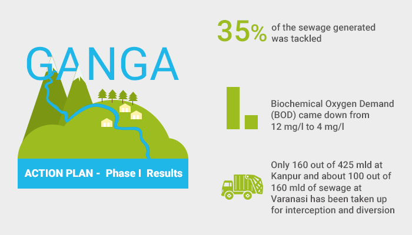

Water Conservation and Efficiency:
Water conservation and efficiency are critical components of addressing water availability problems. By
reducing water waste and using water more efficiently, we can help ensure that water resources are available
for both current and future generations. Here are some key strategies and practices for water conservation
and efficiency:
- Fix Leaks: Regularly check for and repair leaks in your home, including dripping
faucets, running toilets, and leaky pipes. Even small leaks can waste significant amounts of water over
time.

- Water-Efficient Appliances: Replace old and inefficient appliances, such as washing
machines and dishwashers, with WaterSense-labeled or ENERGY STAR-rated models, which use significantly
less water.
- Low-Flow Fixtures: Install low-flow faucets, showerheads, and toilets to reduce water
usage without compromising performance. These fixtures are designed to maintain water pressure while
using less water.
- Rain Barrels and Rainwater Harvesting: Collect rainwater from your roof in rain barrels
and use it for outdoor irrigation, reducing the demand on potable water for landscaping.
- Smart Irrigation: Use smart irrigation systems that adjust watering schedules based on
weather conditions and soil moisture levels to avoid overwatering.
- Xeriscaping: Replace water-thirsty lawns and gardens with drought-resistant, native
plants that require less irrigation.
- Mulching: Apply mulch to garden beds to retain soil moisture and reduce
evaporation.

- Time Your Showers: Take shorter showers, and consider using a shower timer to remind
you to conserve water.
- Turn Off the Tap: Turn off the tap while brushing your teeth or washing your face, and
only run the dishwasher and washing machine with full loads.
- Capture and Reuse Graywater: Collect and reuse graywater (wastewater from sinks,
showers, and laundry) for landscape irrigation, following local regulations.
- Educational Campaigns: Support and participate in community and educational programs
that raise awareness about water conservation and provide tips for efficient water use.
- Regular Maintenance: Maintain your plumbing and irrigation systems to ensure they
operate efficiently and do not waste water.
- Drip Irrigation: Use drip irrigation systems for plants and trees, which deliver water
directly to the root zone, minimizing water loss to evaporation and runoff.


13.Pressure Regulation: Install pressure-reducing valves in your plumbing system to
reduce
water pressure, which can help lower water consumption.
14.Educate and Involve Others: Encourage family members, friends, and colleagues to
adopt
water-saving practices and involve your community in water conservation efforts.
Water conservation not only helps save this precious resource but can also reduce water bills, conserve
energy (as energy is often used to treat and transport water), and mitigate the environmental impacts of
excessive water extraction. These practices are essential for ensuring sustainable water availability and
are a responsibility shared by individuals, businesses, and communities.
Improved Water Management:
Improved water management is a crucial strategy for addressing water availability problems, ensuring the
sustainable use and distribution of water resources. Effective water management involves a comprehensive and
integrated approach that considers the needs of both people and the environment. Here is a paragraph
explaining the concept of improved water management:
Improved water management entails the adoption of holistic and forward-thinking approaches to handle water
resources. This includes efficient allocation, utilization, and conservation of water for various sectors
like agriculture, industry, and domestic use. Integrated Water Resource Management (IWRM) is a common
framework that promotes the coordinated development and management of water, land, and related resources. It
seeks to balance the competing demands for water while safeguarding ecosystems and ensuring water quality.
This approach emphasizes stakeholder engagement, data-driven decision-making, and adaptive strategies that
account for the complexities of local and regional water systems. Through improved water management,
communities can mitigate water scarcity, reduce conflicts over water access, and build resilience to climate
change impacts on water resources.
-
Jal Shakti Abhiyan (Water Power Campaign):
 The Indian
government launched the Jal Shakti Abhiyan to address water scarcity and promote water conservation
across the country. The campaign focuses on rainwater harvesting, watershed development, and efficient
water use practices.
The Indian
government launched the Jal Shakti Abhiyan to address water scarcity and promote water conservation
across the country. The campaign focuses on rainwater harvesting, watershed development, and efficient
water use practices.
-
National Rural Drinking Water Program (NRDWP): NRDWP aims to provide safe and reliable
drinking water to rural areas. It involves the construction of infrastructure like hand pumps, tube
wells, and water treatment plants.
-
Ganga Action Plan (GAP): The Ganga Action Plan is a long-term initiative to clean and
rejuvenate the Ganges River, one of India's most sacred and polluted rivers. The program has undergone
several phases and aims to improve the water quality and ecosystem health of the Ganges.
-
Interlinking of Rivers Project: India has proposed the ambitious Interlinking of Rivers
Project, which aims to transfer water from water-rich regions to water-scarce regions to mitigate water
scarcity. This project, however, has faced environmental and logistical challenges and has been a
subject of debate.
-
Water Pollution Management: India faces water pollution challenges, particularly in its
rivers and lakes. The government has initiated efforts to control industrial pollution and improve
wastewater treatment infrastructure.
-
Groundwater Management: India heavily relies on groundwater for agriculture and
drinking water. However, over-extraction of groundwater is a concern in many parts of the country.
Sustainable groundwater management practices and regulation are essential.

-
Water Conservation and Harvesting: Many Indian states have launched initiatives to
promote rainwater harvesting and conservation techniques, especially in urban areas. These efforts are
essential in addressing water scarcity.
-
River Basin Management: Several river basin organizations and authorities exist in
India to manage and allocate water resources within river basins, fostering more integrated and
sustainable approaches to water management.
-
Water Scarcity Challenges: India experiences water scarcity issues, particularly in
regions like Maharashtra and Tamil Nadu. Drought management plans and water-sharing agreements are
crucial in these areas.
-
Community Involvement: Community-based initiatives, like the revival of traditional
water harvesting structures (e.g., check dams and tanks), play a significant role in water resource
management, especially in rural areas.